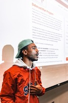

Christian Euell

Hello, my name is Christian Euell. I am currently a senior at Old Dominion University. I have already obtained an associates degree in Computer Science at Tidewater Community College and am currently pursuing a bachelor’s degree in computer science and a minor in cyber security. I have been working as an Amazon Warehouse Associate for over 4 years; considering to apply for Amazon’s IT Department.
Richard Connor
Richard Connor is Senior at Old Dominion University studying Computer Science. He plans to be a software developer with a specialization in app/web development. Currently he has been working as a LG expert at Best Buy for three years and seeking to find a front-end developer position after University. Besides programming he also loves hanging out with friends and playing video games. I'm constantly seeking new knowledge and enjoy playing the piano and learning French. Feel free to connect with me via social media or reach out via email. I'd love to work on an open-source project. Let's connect and make something amazing together!
Victory Chuma
Bio for Victory
Albert Ayitey-Adjin

Hello, My name is Albert Ayitey-Adjin and I am a senior at Old Dominion University studying computer science. I plan on becoming a Data Scientist, with a specialization in machine learning. I currently work at Chipotle as a crew member and I seek to either find employment after graduation or seek a Masters Degree. I love to play video games, cook, hang out with friends and enjoy learning new things ( currently trying to teach myself piano and somewhat of quantum physics). I am interested in the roles of being a software developer and web developer.
Cody Bonham

Cody is a second-degree Computer Science major and Cybersecurity minor planning on graduating in May 2024. His previous degree is a A.A.S. in Physical Therapist Assistant and he worked as a Licensed Physical Therapist Assistant for over 8 years. He currently lives in Marion, Virginia and he spends his free time detailing his vehicles, playing video games, and traveling.